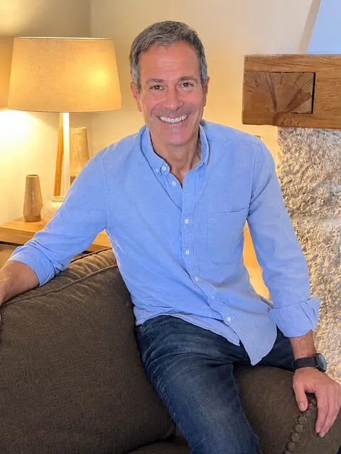

Come back to yourself. Live with direction.
Therapeutic guidance and life coaching to see clearly what weighs on you today, find your direction again and take away resources that stay with you.
- 18+ yearsguiding processes of personal growth
- Trained in the USASpiritual Coach, Life Coach and NLP
- Speakerat international events
- Translatorof El Monje con Traje (Editorial Amat)
There are moments when life asks you to stop and look
A disappointment at work. A relationship that hurts. A money issue that won't resolve. A project that never quite gets started. A life change, a loss.
Whatever your moment, you don't have to go through it alone or in a hurry. With Miquel you can explore any area of your life, step by step, until you see it clearly.

From confusion to clarity
A practical approach and a spiritual approach, together. That is how Miquel works.
Clarity
Observing and untangling what is happening to you, from your own experience, without judgement. Seeing what you couldn't see before.
Direction
Simple, powerful coaching tools that lead you back to your heart and help you find your way again.
Autonomy
Resources that stay with you and that you can keep applying on your own. You are the master of your own transformation.
Choose where to start
Life Coaching and guidance
Individual sessions for any issue or challenge in your life.
Find out morePlant medicine processes
Caring therapeutic processes, with preparation beforehand and integration.
Find out moreRetreats and events
Workshops, talks and retreats with El Último Viaje del Ego.
See retreatsEl Monje con Traje
Spanish translator and facilitator of Raf Adams' method.
DiscoverIt is not about giving you answers, but about walking with you with love and firmness to find your own.
More than 18 years guiding processes of transformation
Miquel Canut is a therapist and life coach. He trained in the United States as a Spiritual Coach and Life Coach, in NLP and in A Course in Miracles, and he guides processes of personal growth, such as childhood wounds or trauma, integrating different disciplines to support a deep understanding of oneself.
He speaks at international events and is the Spanish translator of El Monje con Traje.
Read his story
What people say who have already walked the path
Miquel has supported me through the important changes in my life, in both his healing sessions and his coaching sessions. Thanks to this I have been able to steer my life towards a new purpose and new professional success.Alicia S.Life coaching and guidance
I came to Miquel in the middle of a career change, very confused and with little confidence in myself. Within a few sessions I began to see clearly what I wanted and what was holding me back. What I value most is that I left with tools I still use on my own.Laura M., BarcelonaLife coaching
I did a retreat with Miquel and then continued with one-to-one sessions to integrate everything I had lived through. He guided me with great respect and, at the same time, with firmness. Today I make my decisions from a calmer place that feels much more my own.Jordi P., SabadellRetreat and integration
Three steps, at your pace
Write to me
Tell me in a few lines what you are going through and what you would like to change.
First conversation
We get to know each other and see together whether this guidance is right for you. [Pending: length and whether it is free]
Your process
We design the sessions around where you are. I'll tell you the rates when you write to me. [Pending: format: in person, online or both]
Your transformation begins with a conversation
Write to me and I'll reply personally.